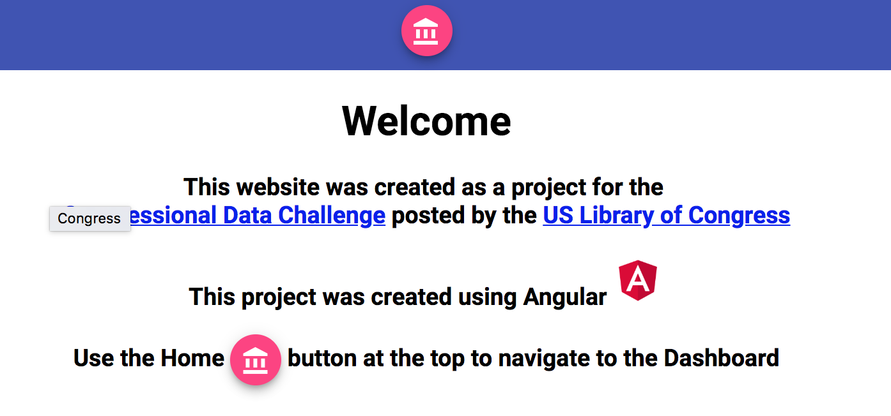

Using machine learning to analyze longitudinal patient data, we identified key predictors for high-cost outliers in hospital systems.
Read the MethodologyRecent studies indicate that natural language processing (NLP) can detect early signs of depression in clinical notes with 85% accuracy. R2ML is currently exploring similar pipelines for behavioral health partners.
New data suggests that for every $1 spent on nutritional counseling for at-risk diabetic populations, health systems save $3.40 in long-term care costs.
Our internal project, CookieJar, demonstrates how "Just-in-Time" adaptive interventions (JITAI) can interrupt binge-eating behaviors using location-based triggers.
Interoperability remains the biggest challenge for hospital networks trying to integrate behavioral health data with primary care records.

A look back at our Library of Congress Data Challenge submission.